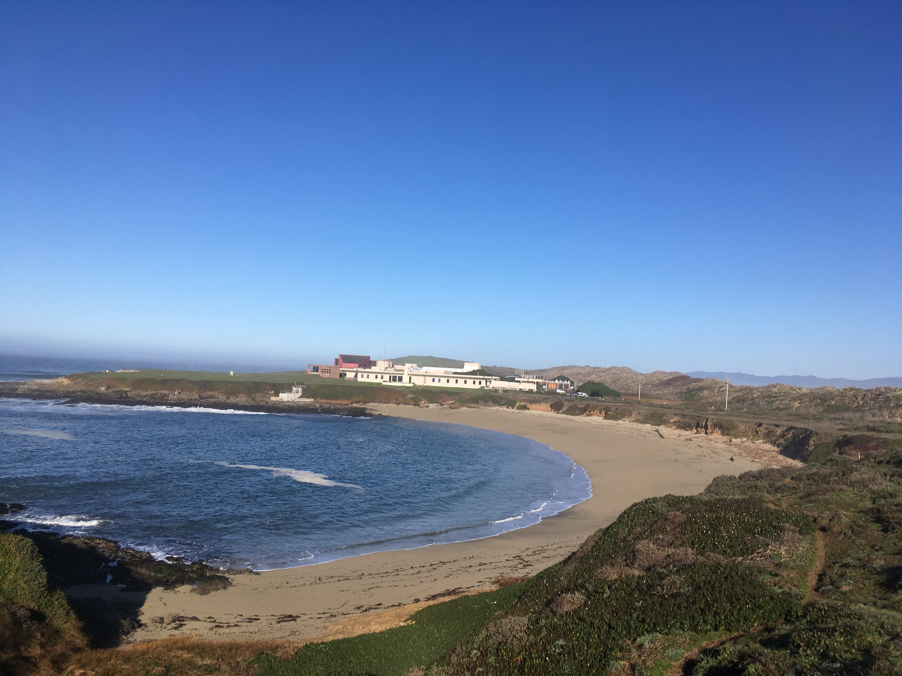

Left & Right
As a member of Dr. Peter Moyle’s Fish Conservation Biology Group at UC Davis, I helped validate a technique to trace the life histories of Chinook salmon using stable isotope ratios in otoliths.
Publication
Willmes, M., Jacinto, E.E., Lewis, L., Fichman, R.A., Bess, Z., Singer, G., Steel, A., Moyle, P., Rypel, A.L., Fangue, N., Glessner, J.J., Hobbs, J. A., Chapman, E. D. 2020. Geochemical tools identify the origins of Chinook Salmon returning to a restored creek. Fisheries.doi.org/10.1002/fsh.10516.